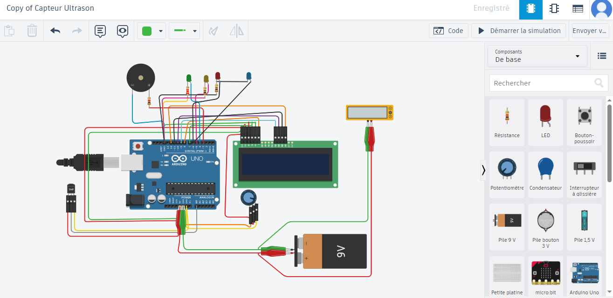

Terrain industriel
Maintenance, diagnostic, assistance aux operations et lecture des contraintes reelles.
Portfolio professionnel - Industrie 4.0 - Energie
Eleve ingenieur en genie industriel, option transformation digitale energetique, je relie le terrain, les capteurs, les donnees et le web pour creer des systemes utiles, mesurables et durables.
Profil
Mon parcours part de la maintenance industrielle et evolue vers la transformation digitale: diagnostic de machines, suivi de production, ESP32, capteurs, interfaces web et solutions energetiques. Mon objectif est simple: rendre les systemes industriels plus lisibles, plus fiables et mieux connectes.
Maintenance, diagnostic, assistance aux operations et lecture des contraintes reelles.
ESP32, capteurs, acquisition de donnees, tableaux de bord et automatisation.
Suivi energetique, modelisation solaire et optimisation des usages industriels.
Parcours
Base technique en maintenance, electricite et logique industrielle.
Projet route Dosso-Bella Niger: participation aux travaux de chantier, assistance a la gestion des equipements et suivi des operations sur le terrain.
Formation pratique sur diagnostic, reparation et intervention en atelier.
Formation en cours depuis 2022 a l'Ecole Sup MTI, Rabat, option transformation digitale energetique. 4e annee terminee, derniere annee prevue en 2026-2027, diplome prevu en 2027.
Maintenance electrique industrielle, diagnostic, suivi des lignes et collaboration terrain.
Secretaire general adjoint de la communaute nigerienne a Rabat.
Mes realisations
J'ai reuni ici mes experiences en maintenance, IoT, developpement web, energie et interventions terrain.

IoTESP32 - Capteurs - Dashboard
J'ai concu ce projet pour suivre des mesures de temperature et d'etat machine depuis une interface web simple.
 Terrain
Terrain
Maintenance - Diagnostic
J'ai travaille sur l'analyse de pannes, la verification electrique et les operations de remise en service.
 Production
Production
Stage - Operations
J'ai suivi les operations de production pour comprendre les flux, les contraintes et les points d'amelioration.
Support
Ajustage - Assistance
J'ai accompagne les techniciens pendant les reglages, les controles et les interventions sur machines.
Ops
Organisation - Terrain
J'ai appris a structurer les informations du terrain et a preparer des comptes rendus utiles aux equipes.
Web
Site web - Education
J'ai structure une presence web claire pour un etablissement educatif, avec contenu organise et affichage responsive.
Energie
Solaire - Simulation
J'ai travaille sur l'estimation de production et l'analyse de besoins pour imaginer un scenario solaire industriel.
Flask - Base de donnees
J'ai pose les bases d'une interface pour consulter des mesures, historiser les donnees et preparer un dashboard.
Auto
Automatisation - Energie
J'ai imagine une logique de controle avec capteurs, relais et supervision pour automatiser une station de pompage.
Projet en cours
Documentation en cours pour un prototype oriente IoT, energie ou supervision industrielle.
Competences
ESP32, Arduino, capteurs, relais, OLED, acquisition et transmission de donnees.
Interfaces responsives, sites vitrines, applications simples et tableaux de bord techniques.
Diagnostic, electricite industrielle, mecanique, suivi operations et securite terrain.
Systemes energetiques industriels, solaire, suivi de consommation et sensibilite durable.
Contact
Disponible pour collaborations, stages, missions techniques et projets a impact industriel.